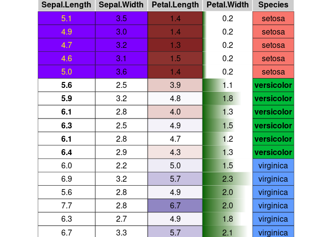

Sergio Oller 2023-10-08
condformat renders a data frame in which cells in columns are formatted according to several rules or criteria.
Browse source code
Checkout the code and browse it at https://github.com/zeehio/condformat.
How to install condformat:
Example
data(iris)
library(condformat)
condformat(iris[c(1:5,70:75, 120:125),]) %>%
rule_fill_discrete(Species) %>%
rule_fill_discrete(c(Sepal.Width, Sepal.Length),
expression = Sepal.Width > Sepal.Length - 2.25,
colours = c("TRUE" = "#7D00FF")) %>%
rule_fill_gradient2(Petal.Length) %>%
rule_text_bold(c(Sepal.Length, Species), Species == "versicolor") %>%
rule_text_color(Sepal.Length,
expression = ifelse(Species == "setosa", "yellow", "")) %>%
rule_fill_bar(Petal.Width, limits = c(0, NA)) %>%
theme_grob(rows = NULL) %>%
condformat2grob()
This example covers most of the condformat rules.